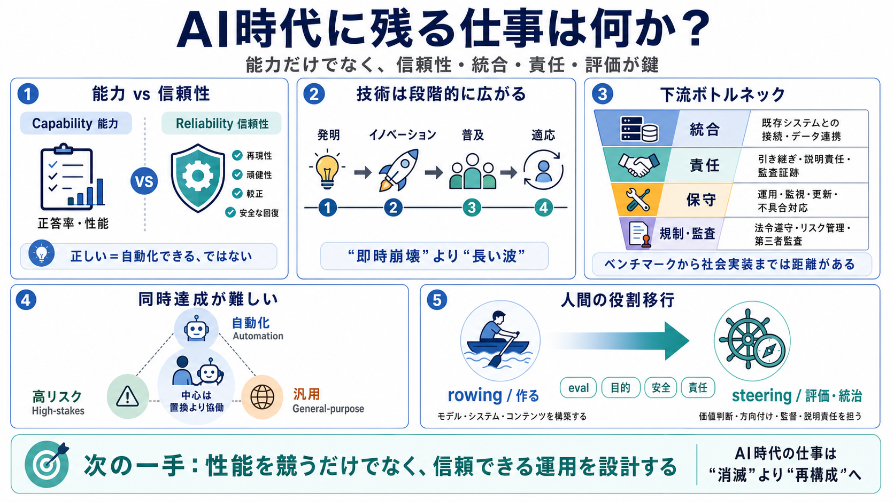

8 AI Agent Metrics That Go Beyond Accuracy | Galileo
Most teams building AI agents often focus heavily on accuracy metrics, treating them as the primary indicator of system …

ICML 2026 Keynote / 要約
AIは「突然の全滅」ではなく、正常な技術として広がる。だから仕事は消えるより“再設計”される、という見取り図を圧縮して整理します。
恐れ or 楽観、どちらも不足
AIの「能力が伸びる」ことと「仕事が直ちに消える」ことは同じではありません。失敗の仕方・再現性・環境への強さ・安全な回復が、実運用を左右します。
AI as Normal Technology
AIは産業革命級に変えるが、経済・社会へ浸透するのは段階的です。発明→イノベーション→普及→適応（しかも適応は遅い）で因果が伸びます。
能力より評価されるべきもの
信頼性は一枚岩ではなく、複数の観測可能な次元に分けられます。正答率だけでは実運用の障壁を見落とします。
能力が高くても、統合が壁
雇用置換が直ちに進まない理由は、下流（deliver/運用/責任）の障壁が大きいからです。ベンチマークの優秀さが、そのまま“製品化の自動化”に直結しません。
自動化×高リスク×汎用
当面は「自動化（automation）」「高リスク（high-stakes）」「汎用性（general-purpose）」を同時に満たしにくい、という見立てです。結果として中心は“置換”より“協働（collaboration）”に寄りやすくなります。
ソフトウェア工学の例
AI導入で“コーディング”は圧縮されても、要件定義や仕様化、責任ある引き渡しは圧縮されにくいと論じます。むしろ運用責任の増加で領域が広がり得ます。
置換だけで説明しない
技術によるコスト低下は、市場拡大を生み得ます。Jevons’ paradox（需要誘発）や lump-of-labor fallacy（仕事量固定の誤り）により、人員削減の直線予測は崩れます。
断絶が起きたら例外
RSI（再帰的自己改善）が達成されても、ASI/AGIから“雇用崩壊”までが自動的に一直線で進むとは限りません。創造性のような検証困難が外部ボトルネックにつまずく可能性があります。
“即時失業”マイルストーンは薄い
仮にRSIが現実に真剣検討されたとしても、「企業が研究室で達成した瞬間に社会全体が即失業状態になる」ようなマイルストーンは想定しにくい、という整理です。
co- 超知性の形
“AI単独の超能力で人間が脇役化する”のではなく、人間側がAIで超能力を獲得していく、という共同（co-）のビジョンが提示されます。
rowing → steering
人間の中心は「作る（building）」から「評価し、統治する（eval/steering）」へ移る可能性が高い、という比喩が出ます。ベンチマーク至上主義の限界も含め、評価コストを受け入れる必要があります。
要約：強みと限界
強みは、能力だけでなく信頼性・統合・責任を扱い、eval/steeringへ接続する点です。限界は、協働中心の“普及速度”や“産業別条件”が定量で示されにくいことです。
次の一手
意思決定の焦点は「性能」から「信頼できる運用（reliability）」へ移ります。eval（評価）とsteering（統治）を設計できるほど、AI時代の仕事は“置換”ではなく“再構成”になります。
Most teams building AI agents often focus heavily on accuracy metrics, treating them as the primary indicator of system …
# Towards a Science of AI Agent Reliability. Grounded in safety-critical engineering, we provide a holistic performance …
# Beyond Accuracy: 5 Metrics That Actually Matter for AI Agents. **AI agents**, or autonomous systems powered by agentic…
The New Agent Reliability Playbook Galileo 2060 subscribers 8 likes 451 views 28 Aug 2025 In the new agentic era, the ol…
This piece lays out a practical playbook for **evals that predict real-world outcomes**: reliable systems under stress, …